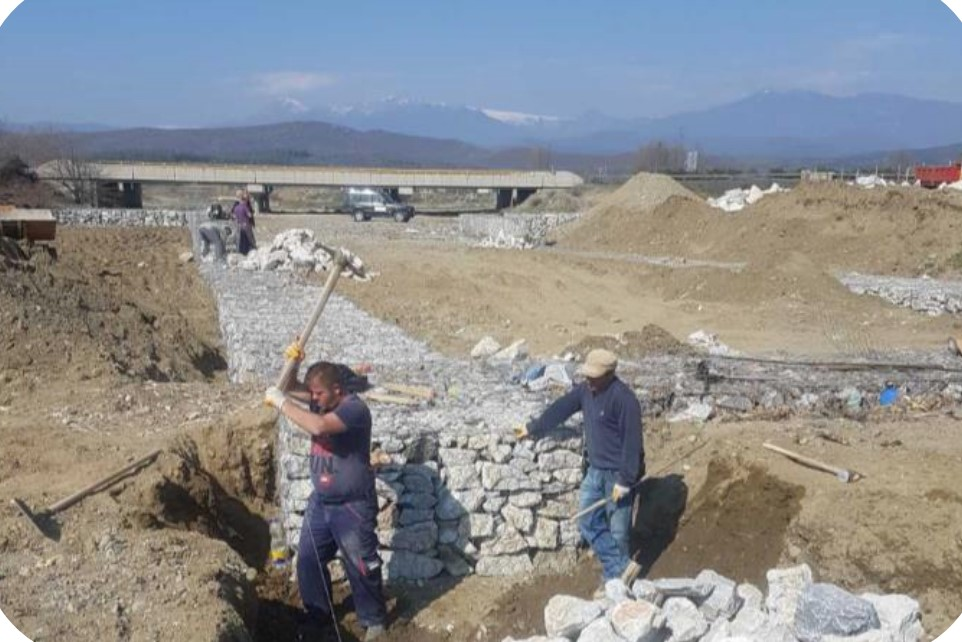

Projekti: Rindërtimi i stacionit hekurudhor në Tetovë.
Autoriteti kontraktues: Ndërmarrje publike Hekurudhat e Republikës së Maqedonisë së Veriut
Përshkrimi i projektit:
Stacioni hekurudhor ndodhet në hyrje të Tetovës.
Projekti përfshinte rikonstruksionin e plotë të godinës, fasadën e re,
ndërtimi i një ambienti të ri sanitar, çatia e re, asfaltimi i parkingut,
ndërrimi i dyerve dhe dritareve, sistemi i ri elektrik dhe ndërtimi
të trotuareve dhe parkut.
Projektet e përfunduara


Projekti: Ndërtimi i urave në Rrugën e Arbërit SHQIPËRI
Autoriteti kontraktor: Ministria e Infrastrukturës dhe Energjisë
Përshkrimi i projektit:
Ndërtimi i disa pjesëve të urave në autostradën ndërkombëtare Rruga e Arbërit
në SHQIPËRI.


Projekti: Rehabilitimi i shtratit dhe urës së lumit MRZENSKA.
Autoriteti Kontraktues: Ndërmarrje Publike Hekurudhat e Republikës së Maqedonisë së Veriut
Përshkrimi i projektit:
Ura Mrzenska ndodhet mbi lumin Mrzenska në Maqedoninë Lindore dhe shërben për
kalimi i trenit.
Ky projekt përfshinte rindërtimin e urës dhe shtratit të lumit, duke vendosur gabione guri
shtratin e lumit dhe ndërtimin e një muri mbrojtës.



Projekti: Ndërtimi dhe përfundimi i punimeve të mbetura të dytë
seksioni, Beljakovce - Kriva Pallanka, Koridori VIII.
Autoriteti Kontraktor: GÜLERMAK AĞIR SANAYİ İNŞAAT VE TAAHHÜT A.Ş - Republika e Turqisë
Përshkrimi i projektit: Ofruesi i shërbimit
Rrugë hyrëse, punime ndërtimi në kanale, nënkalime, mbikalime, ura.